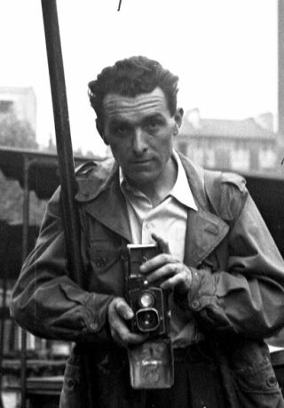
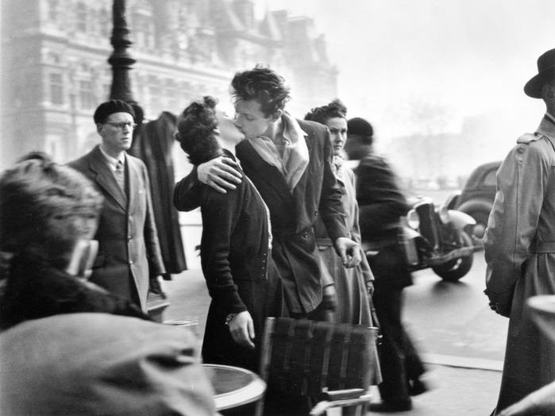
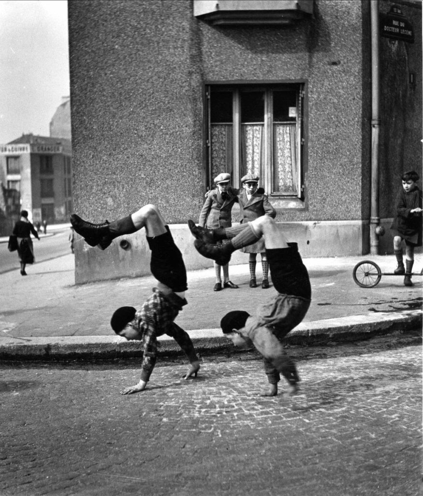
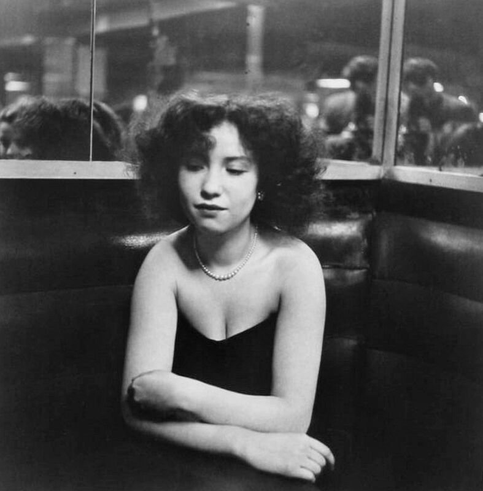

Cento fotografie che ritraggono la vita quotidiana della Parigi del dopoguerra. Amore, ironia e umanità catturati nell'attimo fuggente.
Robert Doisneau ha trasformato i marciapiedi di Parigi in una scena teatrale permanente. Con discrezione e ironia, ha fissato su carta i momenti fugaci che compongono la trama invisibile della vita urbana: gli amanti, i bambini, gli eccentrici, i solitari.
Cento stampe vintage provenienti da archivi privati e istituzioni internazionali, riunite per la prima volta a Pordenone in un corpus raramente esposto in questa completezza.



“I miei soggetti mi sorprendevano mentre sorprendevo loro. Era uno scambio di meraviglie.”
Robert Doisneau — 1992
La Galleria Harry Bertoia si trova nel centro storico di Pordenone, a 5 minuti a piedi dalla stazione ferroviaria. Parcheggio pubblico in Piazza della Motta.